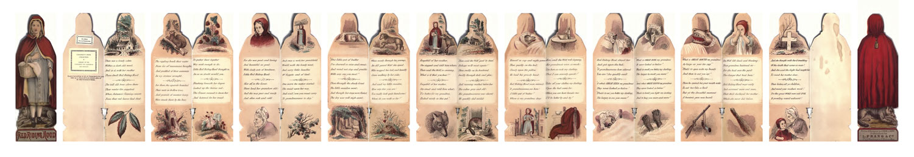
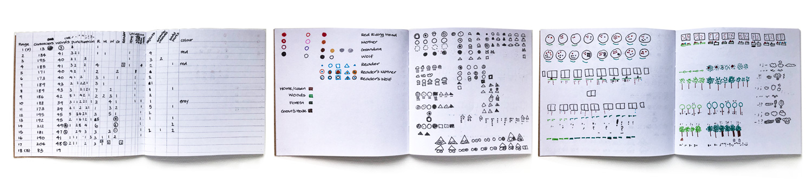
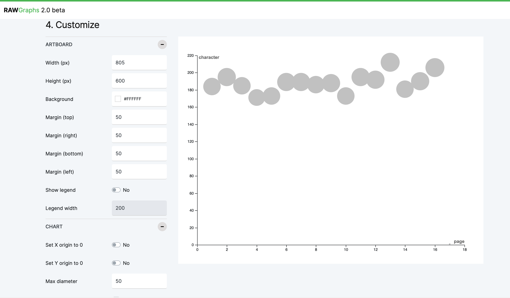
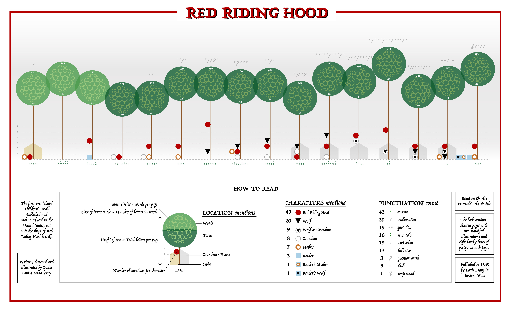
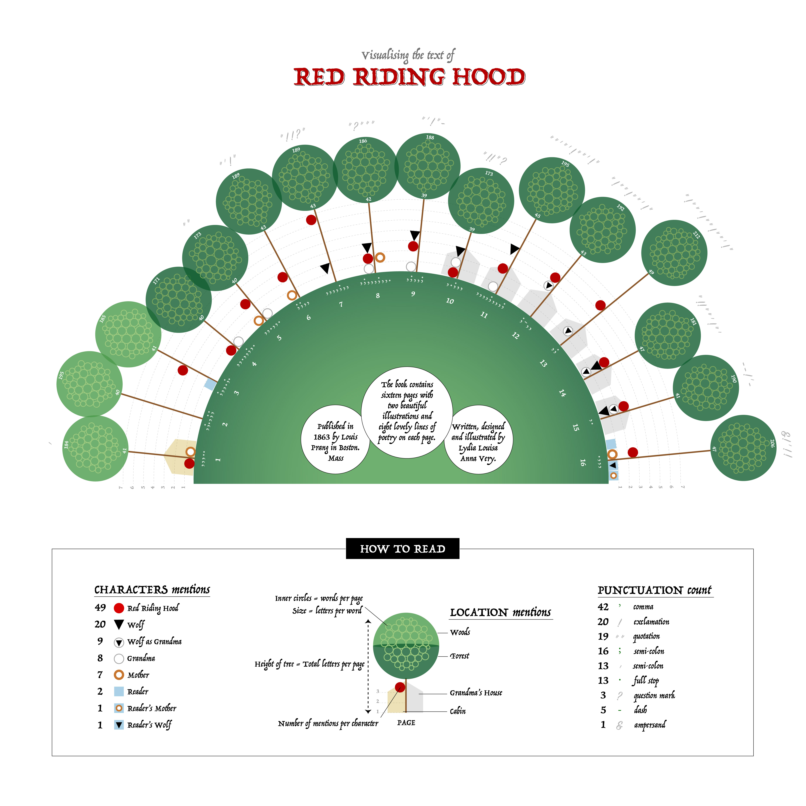
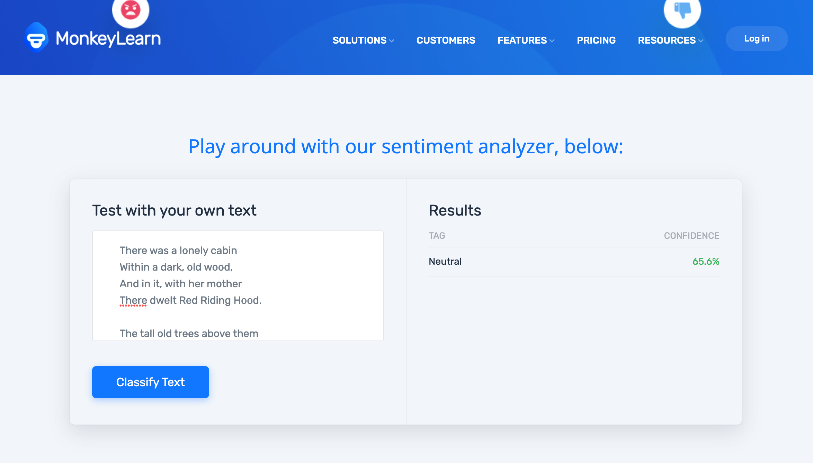

Data
Red Riding Hood
Explored narrative structures as a framework for mapping structured data relationships

Context
A self-initiated project to develop my data visualisation skills, exploring how narrative data could be translated into a visual system. The brief emerged from a course, but quickly became a deeper personal exploration of style, process, and storytelling.
Approach
I treated the story as a dataset, manually collecting and structuring information before translating it into a geometric visual language. Through sketching, iteration, and experimentation, I explored how characters, sentiment, and narrative structure could be represented spatially, balancing clarity with expressive form.
Data Visualisation Exploration and Learning
I’ve been wanting to work on a data visualisation project for a while. I’d been seeing more projects with distinct individual styles and wanted to try creating something of my own. Although I had experimented with small pieces, nothing felt polished. I knew it would take time to develop a style I could be proud of.
I immersed myself in data visualisation podcasts as an accessible way to learn alongside a busy schedule. While inspired and motivated, I struggled to find a starting point. I eventually found a data visualisation course by Frederica Fragapane, whose work I admired, but opted to begin with a more introductory course by Sonja Kuijpers. I began the project using my 10% allowance at King’s Digital Lab, completing most of it (~80%) in my own time to maintain momentum.
Selecting a Data Source from Children's Literature
The course assignment required choosing a book with a personal connection. Without a clear choice, I explored Project Gutenberg, focusing on children’s books due to their shorter length and manageable data collection.
I shortlisted several options, but Red Riding Hood by Lydia Very (1863) stood out due to its unique book shape, illustrations, and language. It fit my criteria perfectly: concise content, familiar narrative, and strong visual appeal.
Since Project Gutenberg only provided HTML text, I searched for original scans. While Worthpoint had partial references, the most complete version came from Internet Archive.

Data Collection and Visualisation Planning
Following the course structure, I manually counted characters per page and explored additional data points. The process was slow but therapeutic, and I organised everything in Excel for clarity and calculation. Word was used to gather text-based metrics such as word and character counts.
With the dataset prepared, I began sketching visualisation ideas. I aimed to reflect the narrative visually and decided to use simple geometric shapes for clarity and ease of potential CSS implementation.
Crafting a Geometric Storyscape
I began by designing symbolic representations of characters, then explored how to embed them within a broader scene. Representing each page as a tree felt fitting, echoing the woodland setting of the story.

Using RAWgraphs, I translated spreadsheet data into SVG visuals, refining them further in Illustrator.

While I achieved the desired components, the layout felt rigid. An initial linear composition lacked visual flow.

I experimented with circular layouts; a full circle didn’t suit the narrative, but a semi-circle created better balance and spatial flow.

Seeking Feedback and Critique
Sharing work for feedback was challenging due to past experiences of limited responses. However, I shared it through the course forum and colleagues. Although responses were few, they were valuable—highlighting overlooked details and suggesting improvements such as incorporating sentiment analysis.
Feedback also raised concerns around attribution clarity, prompting me to reconsider how the original author was represented.
Exploring Sentiment Analysis
I explored sentiment analysis for the first time, aiming to categorise words as positive, negative, or neutral with measurable values. After testing various tools, I selected MonkeyLearn based on criteria:
- Free
- No signup
- Provides sentiment metrics
- Supports both words and text blocks
- No coding required

Refining Visual Elements
Due to the effort required for full analysis, I focused on key words with strong sentiment values and selected the top positive and negative terms. Some results felt questionable, but given constraints, I continued with the dataset.
I integrated sentiment visually using arcs and circles, explored alternative representations like sunbursts, and experimented with word clouds as environmental elements. The legend became increasingly complex, and I iterated on feedback including background adjustments and overall composition.
Reflections and Learning
This project took much longer than expected, and while I’m not fully satisfied with aspects such as legibility, colour, and layout, it marked an important step forward. I learned a great deal through the process and recognised areas for improvement to carry into future work.
Impact
Marked a significant step in developing my visual language and approach to data storytelling. The project surfaced both strengths and limitations in my process, shaping how I think about narrative, abstraction, and clarity in visualisation, and was recognised in the Information is Beautiful Awards longlist.